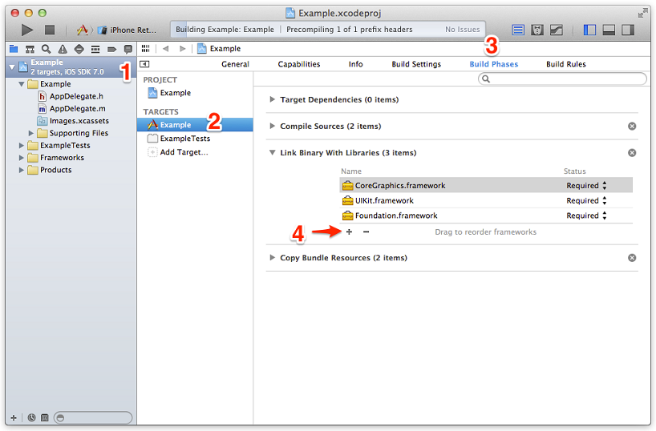
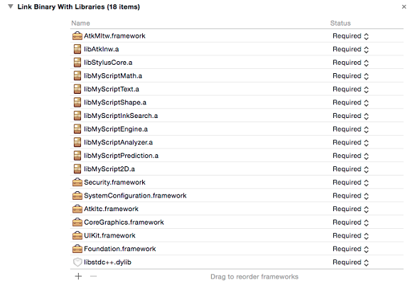
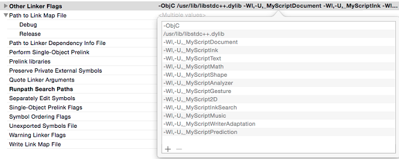
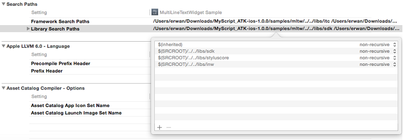

To install and integrate the Multi Line Text Widget on iOS, you must be using the latest version of Xcode and iOS SDK. Minimum deployment target is 7.0.
The Multi Line Text Widget for iOS is a framework that you add to your Xcode project. You also need to add the Interactive Text Component framework for the recognition process. To do so, follow this process:




Resources should include at least an AK type resource. More LK resources can be added as well, to improve and/or specialize the handwriting recognition.
For example, in US English, resources should be at least:
To use the Multi Line Text Widget, add the following import instructions:
#import <AtkMltw/MultiLineTextWidget.h> In order to display the Multi Line Text Widget, you need to configure it.
// Instantiate a MLTWMultiLineView
MLTWMultiLineView *multiLineView = [[MLTWMultiLineView alloc] init];
// Set the delegate
multiLineView.delegate = self;
// Get the resources from the bundle
NSString *akCur = [[NSBundle mainBundle] pathForResource:@"en_US-ak-cur.lite" ofType:@"res"];
NSString *lkText = [[NSBundle mainBundle] pathForResource:@"en_US-lk-text.lite" ofType:@"res"];
NSArray *resources = @[akCur, lkText];
// get valid certificate
NSData *certificate = [NSData dataWithBytes:myCertificate.bytes length:myCertificate.length]
// launch the configuration
[multiLineView
configureWithLocale:@"en_US"
resources:resources
lexicon:nil
certificate:certificate
density:dpi];The widget simplifies the setup of the handwriting recognition engine, and reconfiguration of the engine in case of language change for example.
- (NSError *)configureWithLocale:(NSString *)locale
resources:(NSArray *)resources
lexicon:(NSArray *)lexicon
certificate:(NSData *)aCertificate
density:(float)dpiThis function is non-blocking and performs configuration in the background to avoid blocking the UI thread. Listener callbacks are provided to monitor the beginning and end of the configuration process and update the UI of the input method accordingly.
Handwriting recognition candidate change is implemented via a Word object and a word-based method:
- (void)replaceWord:(MLTWWord *)word withNewText:(NSString *)newTextThe MLTWWord object is intended to regroup informations about a recognized word in the widget. It contains: